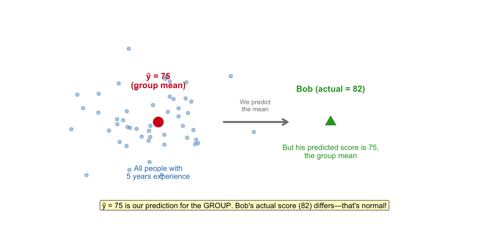
Reminder: Keep up with Textbook Readings
Linear Models with Categorical Predictors
Scenario: Does the new onboarding program actually work?
Today’s Question
“A company wants to know if their new onboarding program improves performance. The new-program group has higher ratings. The CEO is ready to roll out the program company-wide. Should they?”
“Not so fast—the new-program employees also have more education. Is the program effective, or are we just seeing an education effect?”
We’ll revisit this question—much later. By the end of this topic, you’ll be able to answer this question properly.
Learning Objectives
By the end of this lecture, you will be able to:
- Explain that ŷ represents an estimate of the mean y for people with a given set of predictor values
- Explain why categorical variables require special coding in regression
- Interpret regression output when using treatment (dummy) coding
- Calculate predicted scores by “thinking horizontally” across the predictor matrix
- Interpret coefficients using the “holding constant” framework
- Explain why regression coefficients change when predictors are added
- Report regression results using APA 7 formatting conventions
Today’s Goals—In Simple Terms
| By the end of today… | In simpler terms… |
|---|---|
| Understand what ŷ means | Predicting the average for people like them |
| Use treatment coding | Turn categories into 0s and 1s that regression can use |
| “Think horizontally” | Plug values into an equation and calculate predictions |
| Understand “holding constant” | Compare groups fairly by accounting for other differences |
| Understand confounding | See how results can change dramatically when we account for other variables |
Key R Functions We’ll Use
| Function | What it does | Example |
|---|---|---|
as.factor() |
Converts text to a categorical variable | as.factor(department) |
fct_relevel() |
Sets which group is the reference (comparison) group | fct_relevel(location, "office") |
lm() |
Runs the linear regression model | lm(y ~ x, data = df) |
tidy() |
Extracts coefficients into a clean table | tidy(model) |
glance() |
Extracts model-level statistics (R², F, etc.) | glance(model) |
augment() |
Adds predictions and residuals to your data | augment(model, data = df) |
cohen.d() |
Calculates Cohen’s d effect size | cohen.d(y ~ group, data = df) |
Part 1: Conceptual Foundation
What Does ŷ Actually Mean?
Recall notation: ŷ is our predicted value. The hat means “estimated” or “predicted.”
When we calculate ŷ for a person, we are NOT predicting that specific person’s score.
We are estimating the mean y for all people with those predictor values.
An Analogy: NBA Height
Imagine someone tells you: “The average height of NBA players is 6’6”.”
Now you meet an NBA player named Marcus. What’s your best guess for his height?
- Your guess: 6’6” (the average)
- Reality: Marcus might be 6’2” or 7’1”—individuals vary!
Key insight: Your guess of 6’6” is NOT a claim that Marcus is exactly 6’6”. It’s your best guess because you know nothing else about him except that he’s an NBA player.
ŷ works the same way: it’s our best guess for someone based on their predictor values, knowing that individuals will vary around that average.
Population vs. Individual
The Regression Line Connects Means
- At each x value, there’s a whole distribution of y values
- The regression line passes through the mean of each distribution
- This is why we call it “conditional mean”—the mean of y, conditional on x
Plain English: “Conditional mean” just means “the average for a specific subgroup.” For example, the mean salary given that someone has 5 years of experience. The word “conditional” = “given that” or “for people who have.”
Visualizing the Conditional Distributions
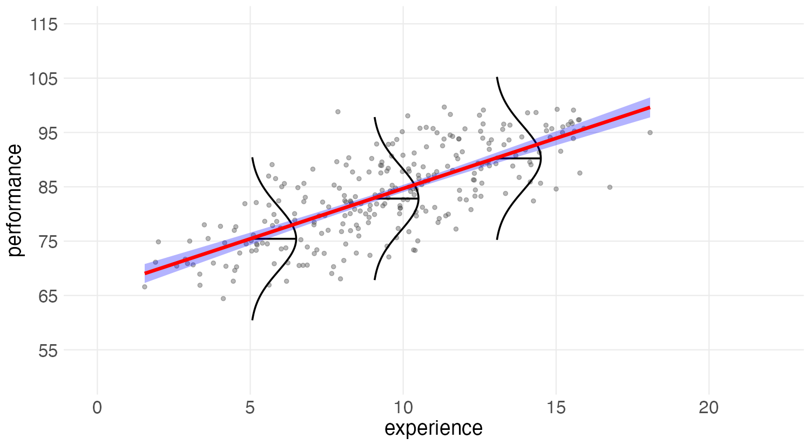
At each experience level, there’s a distribution of performance values. The regression line connects the means of these distributions.
Visualizing What ŷ Means
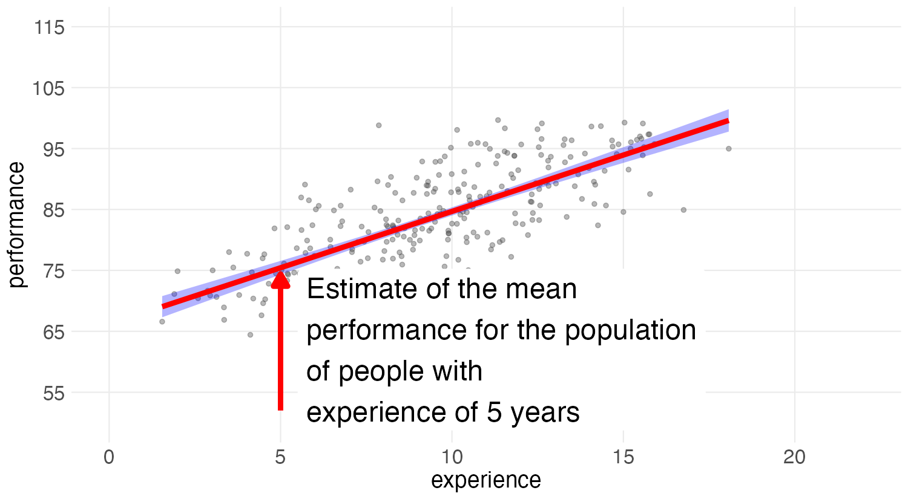
The point on the regression line is our estimate of the mean for the subpopulation at that x value.
What ŷ Means: A Concrete Example
Example: Suppose Bob has 5 years of experience and we predict his performance as 75.
- This 75 is NOT a prediction specific to Bob
- It’s our estimate of the average performance for ALL employees with 5 years of experience
Think of it this way: If we could find thousands of people with exactly 5 years of experience, their average performance would be about 75. Bob is just one person from that population—his actual score could be higher or lower.
What ŷ Means vs. What It Doesn’t Mean
| What ŷ = 75 means | What ŷ = 75 does NOT mean |
|---|---|
| Average performance for all 5-year employees | Bob will score exactly 75 |
| Our best single guess for anyone with 5 years | A guarantee about Bob’s score |
| The center of the distribution at x = 5 | That there’s no variation in y at x = 5 |
Connection to Categorical Predictors
- With a continuous predictor:
- ŷ estimates the mean for people at that x value
- With a categorical predictor:
- ŷ estimates the mean for people in that group
The predicted value for everyone in a group will be the group mean!
Keep this in mind—we’ll see it in action shortly.
Notation Dictionary
| Symbol | Plain English | Example |
|---|---|---|
| ŷ | “y-hat” = our prediction | ŷ = 72 means “we predict 72” |
| b₀ | The starting point (intercept) | b₀ = 72 means “we start at 72” |
| b₁ | How much to add/subtract for a predictor | b₁ = 8 means “add 8 for this group” |
| × 1 | “Yes, include this” | 8 × 1 = 8 (the 8 is included) |
| × 0 | “No, skip this” | 8 × 0 = 0 (the 8 disappears) |
| Int | The intercept column (always 1s) | Everyone gets 1 here |
| c1, c2, c3 | Contrast columns (0s and 1s) | Identify which group someone belongs to |
Recall: The Intercept is Just Another Weight
The intercept is just another regression weight—applied to a column of ones.
Before we add categorical predictors, let’s make sure we understand how the intercept works.
Scenario: How engaged are employees at this company?
Employee Engagement Data
We surveyed employees and asked them to rate their engagement on a scale.
| name | employee_id | engagement |
|---|---|---|
| Oscar | 1 | 72 |
| Pam | 2 | 68 |
| Quentin | 3 | 75 |
| Rosa | 4 | 70 |
| Sam | 5 | 73 |
| Tara | 6 | 69 |
| Uma | 7 | 74 |
| Victor | 8 | 71 |
| Wendy | 9 | 76 |
| Xavier | 10 | 72 |
Our question: What’s our prediction for any employee’s engagement?
The Intercept-Only Model: Mean
| term | estimate | std.error | statistic | p.value |
|---|---|---|---|---|
| (Intercept) | 72 | 0.8164966 | 88.18163 | 0 |
The intercept is 72. What is 72?
It’s the mean!
The Intercept-Only Model: SD and MSE
| r.squared | adj.r.squared | sigma | statistic | p.value | df | logLik | AIC | BIC | deviance | df.residual | nobs |
|---|---|---|---|---|---|---|---|---|---|---|---|
| 0 | 0 | 2.581989 | NA | NA | NA | -23.14818 | 50.29637 | 50.90154 | 60 | 9 | 10 |
Sigma is 2.58 - the SD of the residuals.
This is the same as SD scores
The SD of engagement scores is 2.58
Recall PSYC 6060
\(MSE = SD(residuals)^2 = \text{sigma}^2 =(2.581989)^2 = 6.666667\)
We get MSE from the glance() output!
Augment the Data
Make predicted scores for each person
What does augment() do? It takes our model and adds predictions (.fitted) and residuals (.resid) back to our original data. It’s like asking R: “For each person, what did you predict?”
| name | employee_id | engagement | .fitted | .resid | .hat | .sigma | .cooksd | .std.resid |
|---|---|---|---|---|---|---|---|---|
| Oscar | 1 | 72 | 72 | 0 | 0.1 | 2.738613 | 0.0000000 | 0.0000000 |
| Pam | 2 | 68 | 72 | -4 | 0.1 | 2.297341 | 0.2962963 | -1.6329932 |
| Quentin | 3 | 75 | 72 | 3 | 0.1 | 2.500000 | 0.1666667 | 1.2247449 |
| Rosa | 4 | 70 | 72 | -2 | 0.1 | 2.635231 | 0.0740741 | -0.8164966 |
| Sam | 5 | 73 | 72 | 1 | 0.1 | 2.713137 | 0.0185185 | 0.4082483 |
| Tara | 6 | 69 | 72 | -3 | 0.1 | 2.500000 | 0.1666667 | -1.2247449 |
| Uma | 7 | 74 | 72 | 2 | 0.1 | 2.635231 | 0.0740741 | 0.8164966 |
| Victor | 8 | 71 | 72 | -1 | 0.1 | 2.713137 | 0.0185185 | -0.4082483 |
| Wendy | 9 | 76 | 72 | 4 | 0.1 | 2.297341 | 0.2962963 | 1.6329932 |
| Xavier | 10 | 72 | 72 | 0 | 0.1 | 2.738613 | 0.0000000 | 0.0000000 |
Visualizing the Model: Code
# Plot data points and predicted values
ggplot(engage_augmented, aes(x = 1,
y = engagement)) +
geom_jitter(width = 0.1, size = 3, alpha = 0.7) +
geom_hline(aes(yintercept = .fitted[1]),
color = "red", linewidth = 2) +
labs(x = "", y = "Engagement Score") +
theme_minimal(base_size = 18) +
theme(axis.text.x = element_blank(),
axis.ticks.x = element_blank())Plot: Intercept-Only Model
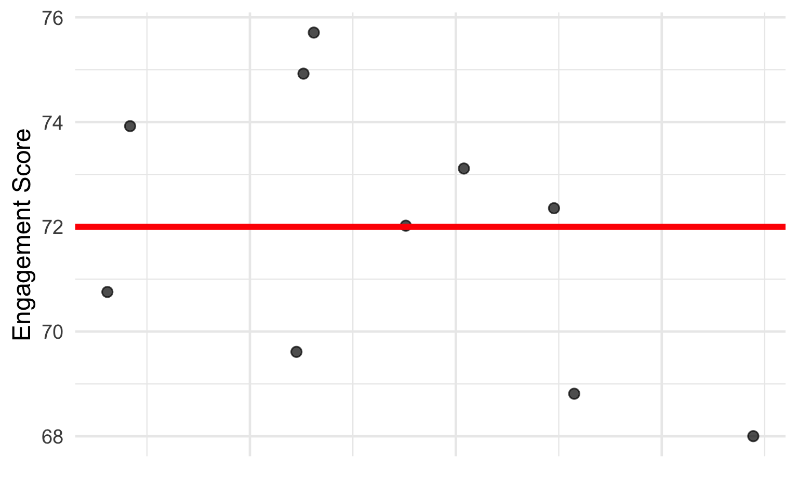
The red line shows ŷ (predicted value) for each person. But here the predicted value for everyone in the group is the same—the overall mean. Therefore the red line shows the group mean. The difference between each point and the line is the residual. The SD of the residuals is 2.58.
Why Is It the Mean? The Matrix View
Think of it as a spreadsheet, not scary math.
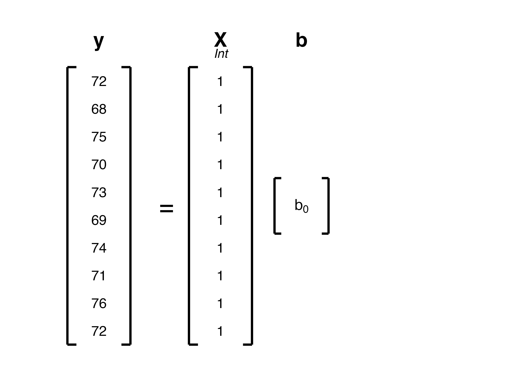
- The X matrix is just a column of 1s. Everyone gets multiplied by the same weight (b₀)
- So ŷ is the same for everyone: ŷ = b₀ × 1 = b₀
Key Insight
When everyone has the same predictor value, the best prediction is the group mean.
This is the foundation for everything that follows.
When we add categorical predictors, we’re essentially creating subgroups—and ŷ for each subgroup will be that subgroup’s mean.
Polling Question 1
If we run
lm(salary ~ 1)on a dataset, what will the intercept represent?
- Zero
- The mean salary
- The median salary
- The standard deviation of salary
Polling Question 1: Answer
Correct answer: B) The mean salary
When we run lm(salary ~ 1), we’re fitting an intercept-only model with no predictors. The best single prediction for everyone is the mean of the outcome variable. The intercept captures this mean.
From One Group to Many
So far, we’ve predicted a single mean for everyone—treating all employees as one group.
But in research, we usually want to compare groups:
- Does turnover differ across departments?
- Do outcomes differ between treatment and control conditions?
- Does satisfaction vary by job type?
The goal: Give each group its own predicted mean (ŷ), so we can compare them. Think 1-way ANOVA with regression.
The question: How do we tell the regression model which group each person belongs to?
The Intuitive Approach
A natural instinct is to create a column in your data that numbers the groups:
| Employee | Department | Department Code | Turnover |
|---|---|---|---|
| Amy | HR | 1 | 2.1 |
| Ben | Sales | 2 | 3.5 |
| Cara | Engineering | 3 | 2.8 |
| Dan | HR | 1 | 1.9 |
Then use lm(turnover ~ department_code).
This feels sensible—but it creates serious problems.
Why Can’t We Just Use 1, 2, 3 for Groups?
Students often think they can code groups as 1, 2, 3 and use that column directly.
The problem: The coefficient would represent “for every 1-unit increase in department number, turnover increases by X”
- But what does it mean to “increase by 1 department”?
- This implies Sales is exactly “between” HR and Engineering
- Departments aren’t ordered—there’s no meaningful “distance” between them
The Arbitrary Ordering Problem
| Coding Option | HR | Sales | Engineering | Implied Order |
|---|---|---|---|---|
| Option A | 1 | 2 | 3 | HR < Sales < Eng |
| Option B | 1 | 3 | 2 | HR < Eng < Sales |
| Option C | 2 | 1 | 3 | Sales < HR < Eng |
Each coding gives different regression coefficients! The overall model fit (R², F-test) stays the same, but the coefficients have different meanings.
Measurement Levels
| Level | Example | Can we use numbers directly? |
|---|---|---|
| Nominal | Department, Gender, Treatment group | No—no ordering exists |
| Ordinal | Education level (HS, BA, MA, PhD) | Ordering exists but intervals unequal |
| Interval | Temperature, Test scores | Yes—equal intervals meaningful |
Departments are nominal—using 1, 2, 3 pretends they’re interval-level data.
What Goes Wrong: A Demonstration
Suppose we have three departments with these mean turnover rates:
| Department | Mean Turnover |
|---|---|
| HR | 2.0 |
| Sales | 3.3 |
| Engineering | 3.0 |
If we code them as 1, 2, 3 and run regression, we get ONE coefficient that says: “For each +1 in department number, turnover changes by X.”
But which ordering should we use?
- HR=1, Sales=2, Eng=3 → coefficient = +0.5
- HR=1, Eng=2, Sales=3 → coefficient = +0.65
- Sales=1, HR=2, Eng=3 → coefficient = -0.15
Same data, different answers! The coefficient depends on an arbitrary choice.
The Real Problem
Using 1, 2, 3 assumes:
- The groups are ordered (they’re not)
- The distance between 1→2 equals 2→3 (meaningless)
- The effect is linear across this fake scale (nonsense)
We need a coding system that:
- Doesn’t impose a fake ordering
- Lets each group have its own mean
- Makes interpretable comparisons
That’s what contrast coding does!
The Solution: Contrast Coding
Instead of one column with arbitrary numbers, we create multiple columns of 0s and 1s that capture group membership without imposing false assumptions.
We’ll start with treatment coding (also called dummy coding).
Part 2: Treatment Coding with Two Groups
Scenario: Remote work vs. in-office—who’s more satisfied?
Remote vs. In-Office: The Research Question
A company wants to compare job satisfaction between remote and in-office workers.
This is exactly the situation where you might run a t-test.
But regression gives us the same answer—in a more flexible framework that we can build on.
| Approach | What it tells us |
|---|---|
| t-test | Are the means different? |
| Regression | Are the means different? (same answer!) |
| Regression advantage | Easily extends to multiple predictors |
Work Location Data
| name | employee_id | location | satisfaction |
|---|---|---|---|
| Alex | 1 | office | 70 |
| Beth | 2 | office | 74 |
| Carl | 3 | office | 71 |
| Derek | 4 | office | 75 |
| Emma | 5 | office | 68 |
| Felix | 6 | office | 74 |
| Dana | 7 | remote | 82 |
| Eric | 8 | remote | 78 |
| Fran | 9 | remote | 80 |
| Gina | 10 | remote | 84 |
| Hugo | 11 | remote | 76 |
| Irene | 12 | remote | 80 |
Setting Up the Factor
[1] "office" "remote"The output shows "office" "remote". See how “office” comes first? That means it’s our reference group—the one that gets 0s in the contrast column.
- First convert the text column to a factor
- Then explicitly set “office” as the reference group
- The reference group is the baseline we compare against
Understanding the Reference Group
The reference group isn’t “better” or “special”—it’s just our comparison point.
We could pick any group. It’s like choosing which city to measure distances from. If you measure from Toronto, Guelph is about 100 km away. If you measure from Vancouver, Guelph is about 4,300 km away. The cities haven’t moved—just your reference point.
Pro Tip: The Model Stays the Same
Changing the reference group changes the coefficients (because the comparison point moves), but it does NOT change the model fit (\(R^2\)) or the predicted values (\(\hat{y}\)) for any group. The model makes the same predictions regardless of which group you call “reference.”
Note: With unequal group sizes, the choice of reference group can affect standard errors and significance—more on this later.
Factor Functions Comparison
| Function | Reference group order | When to use |
|---|---|---|
as.factor() |
Alphabetical | When alphabetical makes sense |
as_factor() |
Order in data | When data order is meaningful |
fct_relevel() |
You choose explicitly | Recommended! Always be explicit |
How R Builds the Design Matrix
When you have a factor with 2 levels, R creates:
- Column 1: All 1s (the intercept column, labeled “Int”)
- Column 2: 0 for reference group, 1 for other group (the contrast column, labeled “c1”)
New notation: “Int” = intercept column (always 1s). “c1” = contrast column 1 (0s and 1s that identify group membership). We’ll add c2, c3, etc. when we have more groups.
Employee Location y Int c1
------------------------------------
Alex office 70 1 0
Beth office 74 1 0
Carl office 71 1 0
...
Dana remote 82 1 1
Eric remote 78 1 1
Fran remote 80 1 1Design Matrix: y = Xb
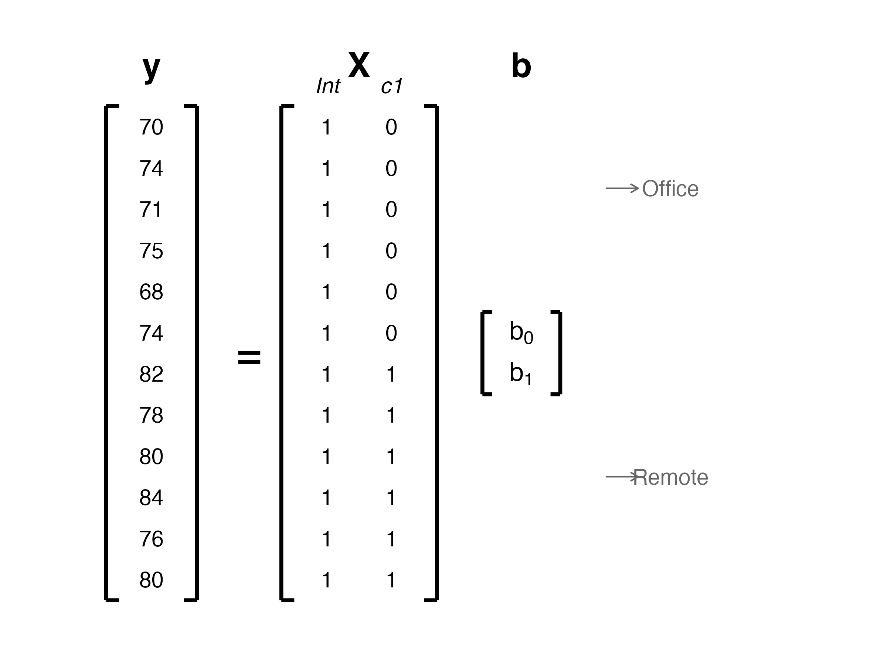
The design matrix (X) is the complete set of predictor columns that R uses to calculate predictions. It combines:
- The intercept column (all 1s)—ensures everyone starts with a baseline value
- The contrast column(s)—the 0/1 codes that identify group membership
Key Points: Treatment Coding
- Reference group gets 0 on the contrast column
- Other group gets 1 on the contrast column
- Everyone gets 1 on the intercept column
- The 0/1 pattern “turns on/off” the coefficient
The Light Switch Analogy
Notation: b₁ is the coefficient for the first contrast column (c1). It tells us how much to add when c1 = 1.
Think of each coefficient as a light with a switch:
| c1 value | What it does | Like a light switch… |
|---|---|---|
| 0 | The term contributes nothing (8 × 0 = 0) | Switch is off |
| 1 | The term adds its value (8 × 1 = 8) | Switch is on |
The coefficient itself (8) never changes—it’s the multiplication by 0 or 1 that determines if it contributes.
Light Switch Diagram
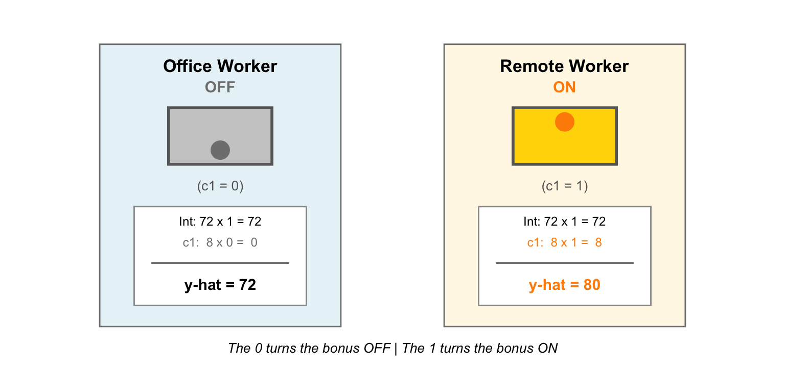
Running the Regression
| term | estimate | std.error | statistic | p.value |
|---|---|---|---|---|
| (Intercept) | 72 | 1.140175 | 63.148177 | 0.0000000 |
| locationremote | 8 | 1.612451 | 4.961389 | 0.0005689 |
The intercept (72) is the mean for office workers—because that was our reference level. Remember fct_relevel(location, "office")?
The coefficient for locationremote (8) is the difference between the remote mean and the office mean. So the mean for remote workers is 80 (72 + 8 = 80).
The p-value for locationremote tests whether the means differ between groups.
What does p = 0.0005689 mean? If office and remote workers were actually the same, we’d have only a 0.057% chance of seeing a difference this large or larger. That’s very unlikely—so we’re confident the groups truly differ.
Augment the Data
Make predicted scores for each person/group
| name | employee_id | location | satisfaction | .fitted | .resid | .hat | .sigma | .cooksd | .std.resid |
|---|---|---|---|---|---|---|---|---|---|
| Alex | 1 | office | 70 | 72 | -2 | 0.1666667 | 2.851900 | 0.0615385 | -0.7844645 |
| Beth | 2 | office | 74 | 72 | 2 | 0.1666667 | 2.851900 | 0.0615385 | 0.7844645 |
| Carl | 3 | office | 71 | 72 | -1 | 0.1666667 | 2.921187 | 0.0153846 | -0.3922323 |
| Derek | 4 | office | 75 | 72 | 3 | 0.1666667 | 2.732520 | 0.1384615 | 1.1766968 |
| Emma | 5 | office | 68 | 72 | -4 | 0.1666667 | 2.556039 | 0.2461538 | -1.5689291 |
| Felix | 6 | office | 74 | 72 | 2 | 0.1666667 | 2.851900 | 0.0615385 | 0.7844645 |
| Dana | 7 | remote | 82 | 80 | 2 | 0.1666667 | 2.851900 | 0.0615385 | 0.7844645 |
| Eric | 8 | remote | 78 | 80 | -2 | 0.1666667 | 2.851900 | 0.0615385 | -0.7844645 |
| Fran | 9 | remote | 80 | 80 | 0 | 0.1666667 | 2.943920 | 0.0000000 | 0.0000000 |
| Gina | 10 | remote | 84 | 80 | 4 | 0.1666667 | 2.556039 | 0.2461538 | 1.5689291 |
| Hugo | 11 | remote | 76 | 80 | -4 | 0.1666667 | 2.556039 | 0.2461538 | -1.5689291 |
| Irene | 12 | remote | 80 | 80 | 0 | 0.1666667 | 2.943920 | 0.0000000 | 0.0000000 |
Visualizing the Model: Result
# Create augmented data with predictions and residuals
ggplot(work_augmented, aes(x = location,
y = satisfaction,
group = location)) +
geom_jitter(width = 0.1, size = 3, alpha = 0.7) +
geom_errorbar(aes(ymin = .fitted, ymax = .fitted),
color = "red", linewidth = 2, width = 0.2) +
labs(x = "Work Location", y = "Job Satisfaction") +
theme_minimal(base_size = 18)Plot: Work Location Model

The lines show ŷ (predicted values) for each group—which equal the group means!
Interpreting the Output
| Term | Estimate | What it means |
|---|---|---|
(Intercept) |
72 | Mean satisfaction for office workers (reference group) |
locationremote |
8 | Difference: remote mean − office mean |
- The intercept (72) is the mean for the reference group—office workers
- The coefficient (8) tells us remote workers score 8 points higher on average
- So the remote mean is 72 + 8 = 80
Quick Check
Before moving on: In your own words, what does the coefficient of 8 tell us?
Take a moment to think about this—it’s the key to interpreting treatment-coded regression.
Verify with Group Means
| location | mean_satisfaction |
|---|---|
| office | 72 |
| remote | 80 |
Intercept = office mean. Coefficient = difference between means.
Connection to the t-Test
Two Sample t-test
data: satisfaction by location
t = -4.9614, df = 10, p-value = 0.0005689
alternative hypothesis: true difference in means between group office and group remote is not equal to 0
95 percent confidence interval:
-11.592766 -4.407234
sample estimates:
mean in group office mean in group remote
72 80 Same p-value as the regression (p = 0.0005689)! Regression with a 2-level factor IS an independent samples t-test.
Why var.equal = TRUE? We use this option because regression assumes equal variances across groups (homoscedasticity). The default Welch t-test relaxes this assumption and would give slightly different results. With var.equal = TRUE, the t-test uses a pooled variance estimate—exactly what regression does.
Running the Regression: Redux
| term | estimate | std.error | statistic | p.value |
|---|---|---|---|---|
| (Intercept) | 72 | 1.140175 | 63.148177 | 0.0000000 |
| locationremote | 8 | 1.612451 | 4.961389 | 0.0005689 |
The intercept (72) is the mean for office workers—because that was our reference level. Remember fct_relevel(location, "office")?
The coefficient for locationremote (8) is the difference between the remote mean and the office mean. So the mean for remote workers is 80 (72 + 8 = 80).
The p-value for locationremote tests whether the means differ between groups.
What does p = 0.0005689 mean? If office and remote workers were actually the same, we’d have only a 0.057% chance of seeing a difference this large or larger. That’s very unlikely—so we’re confident the groups truly differ.
The Three Quantities You Must Distinguish
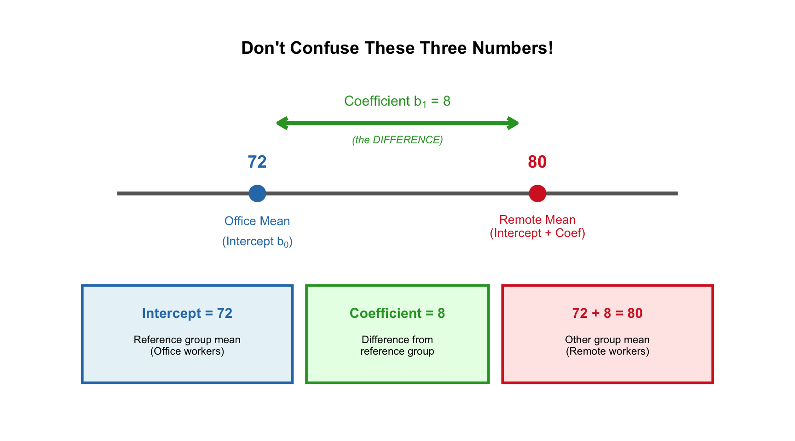
The coefficient is NOT the group mean—it’s the DIFFERENCE from the reference group!
Common Mistake to Avoid
A student writes: “Remote workers have a satisfaction score of 8.”
What’s wrong? The coefficient (8) is the difference between groups, not the remote group’s mean!
| What they wrote | What they should write |
|---|---|
| “Remote satisfaction = 8” | “Remote satisfaction = 80 (intercept + coefficient = 72 + 8)” |
| “The remote effect is 80” | “The remote effect is 8 points higher than office” |
Remember:
- The intercept (72) = reference group mean
- The coefficient (8) = how much higher/lower the other group is
- The other group’s mean = intercept + coefficient (72 + 8 = 80)
Polling Question 2
The regression output:
| term | estimate | std.error | statistic | p.value |
|---|---|---|---|---|
| (Intercept) | 45 | 2.1 | 21.43 | 0.0000001 |
| departmentSales | 12 | 3.0 | 4.00 | 0.0012000 |
| departmentEngineering | -3 | 3.0 | -1.00 | 0.3256000 |
Type the mean for Engineering in the chat…
DO NOT PRESS ENTER YET!
Wait for my signal…
Practice: Answers
| term | estimate | std.error | statistic | p.value |
|---|---|---|---|---|
| (Intercept) | 45 | 2.1 | 21.43 | 0.0000001 |
| departmentSales | 12 | 3.0 | 4.00 | 0.0012000 |
| departmentEngineering | -3 | 3.0 | -1.00 | 0.3256000 |
| Question | Answer | Explanation |
|---|---|---|
| Reference group? | HR | It doesn’t appear as a coefficient |
| HR mean? | 45 | Reference mean = intercept |
| Sales mean? | 45 + 12 = 57 | Intercept + coefficient |
| Engineering mean? | 45 + (-3) = 42 | Intercept + coefficient |
Key insight: Engineering’s negative coefficient means they score lower than HR.
Thinking Horizontally: Predicted Scores
For each person, we calculate ŷ by:
- Reading across their row in the design matrix
- Multiplying each value by its coefficient
- Adding up all the products
Matrices: Thinking Horizontally Visual
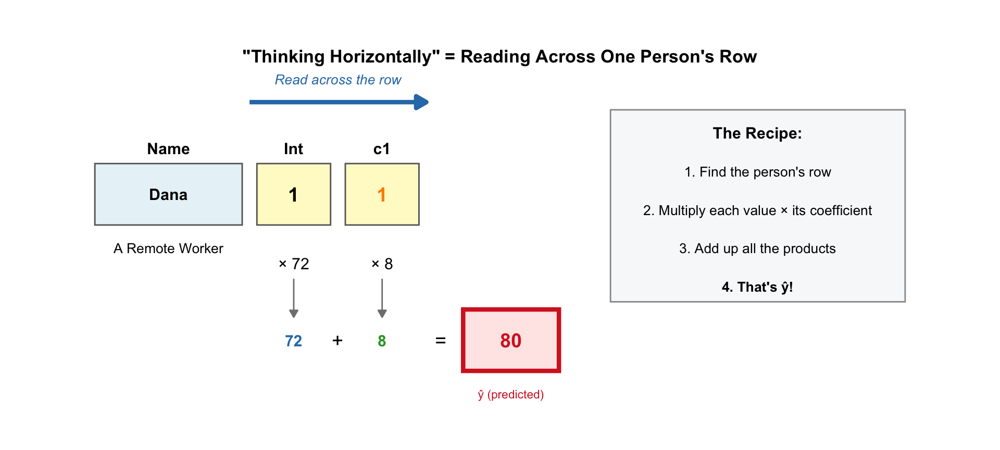
Because Dana is a remote worker the c1 value is 1 for her.
| term | estimate | std.error | statistic | p.value |
|---|---|---|---|---|
| (Intercept) | 72 | 1.140175 | 63.148177 | 0.0000000 |
| locationremote | 8 | 1.612451 | 4.961389 | 0.0005689 |
The Prediction Equation
For our model: ŷ = b₀(Int) + b₁(c1) = 72(Int) + 8(c1)
Where:
- b₀ = 72 (intercept)
- b₁ = 8 (coefficient for remote)
- Int = intercept column value (always 1)
- c1 = contrast column value (0 for office, 1 for remote)
Full Calculation Table
| Name | Location | y | Int | c1 | ŷ Calculation | ŷ |
|---|---|---|---|---|---|---|
| Alex | office | 70 | 1 | 0 | 72(1) + 8(0) = 72 + 0 | 72 |
| Beth | office | 74 | 1 | 0 | 72(1) + 8(0) = 72 + 0 | 72 |
| Carl | office | 71 | 1 | 0 | 72(1) + 8(0) = 72 + 0 | 72 |
| Dana | remote | 82 | 1 | 1 | 72(1) + 8(1) = 72 + 8 | 80 |
| Eric | remote | 78 | 1 | 1 | 72(1) + 8(1) = 72 + 8 | 80 |
| Fran | remote | 80 | 1 | 1 | 72(1) + 8(1) = 72 + 8 | 80 |
Step-by-Step: Calculating ŷ for Dana
Let’s walk through Dana’s calculation slowly:
Find Dana’s row values: Int = 1, c1 = 1
Multiply each by its coefficient:
- Intercept: 72 × 1 = 72
- Remote coefficient: 8 × 1 = 8
Add the products: 72 + 8 = 80
Why does c1 = 1 matter? It “turns on” the remote coefficient, adding 8 to the intercept!
The Key Insight
The 0 or 1 acts like an on/off switch for the coefficient!
| Group | Contrast value | Effect on ŷ |
|---|---|---|
| Office (reference) | 0 | Coefficient is OFF → ŷ = intercept only |
| Remote | 1 | Coefficient is ON → ŷ = intercept + coefficient |
Your Turn: Calculate ŷ for Beth
Beth is an office worker. Using the same model (b₀ = 72, b₁ = 8):
Step 1: What are Beth’s row values?
- Int = ?
- c1 = ?
Step 2: Write the equation and plug in values
Step 3: Calculate ŷ
⏱️ Take 60 seconds. When ready, put your answer in the chat. I’ll reveal the solution after.
Your Turn: Answer
Beth is an office worker (reference group).
| Step | What we do | Result |
|---|---|---|
| 1 | Find Beth’s row values | Int = 1, c1 = 0 |
| 2 | Write equation with values | ŷ = 72(1) + 8(0) |
| 3 | Calculate | 72 + 0 = 72 |
Key point: Because c1 = 0, the remote coefficient is “switched off.” Beth only gets the intercept!
The Calculation Template
Use this for ANY treatment-coded regression:
Step 1: Find their row (what are their 0s and 1s?)
Step 2: Write: ŷ = b₀(Int) + b₁(c1) + b₂(c2) + …
Step 3: Plug in their values
Step 4: Multiply first, then add
Pro tip: If they’re in the reference group, all contrast columns = 0, so ŷ = intercept.
Connecting Back to ŷ as Group Mean
| Group | ŷ | Actual mean |
|---|---|---|
| Office (reference) | 72 | 72 |
| Remote | 80 | 80 |
The predicted value for everyone in a group is that group’s mean!
This is the connection to Part 1: ŷ estimates the conditional mean.
Ready for More Groups?
Good news: Everything we just learned applies to more than two groups!
The only change: We add more contrast columns—one for each additional group beyond the reference.
With 2 groups → 1 contrast column (what we just did)
With 4 groups → 3 contrast columns (coming up next)
The a-1 rule tells us exactly how many we need.
Additional Statistics for Results Part 1
Beyond coefficients and p-values, APA 7 requires effect sizes and model fit statistics.
R² from glance():
| r.squared | adj.r.squared | sigma | statistic | p.value | df | logLik | AIC | BIC | deviance | df.residual | nobs |
|---|---|---|---|---|---|---|---|---|---|---|---|
| 0.7111111 | 0.6822222 | 2.792848 | 24.61538 | 0.0005689 | 1 | -28.25808 | 62.51615 | 63.97087 | 78 | 10 | 12 |
R² Confidence Interval from MBESS:
| R2 | CI_lower | CI_upper |
|---|---|---|
| 0.71 | 0.25 | 0.84 |
Additional Statistics for Results Part 2
Cohen’s d from effsize package:
Cohen's d
d estimate: -2.864459 (large)
95 percent confidence interval:
lower upper
-4.695352 -1.033567 Descriptive Statistics:
| location | mean_satisfaction | sd_satisfaction | n |
|---|---|---|---|
| office | 72 | 2.756810 | 6 |
| remote | 80 | 2.828427 | 6 |
Results Paragraph: Work Location
We examined whether work location (office vs. remote) was associated with job satisfaction (N = 12). We used linear regression with treatment coding, where office workers served as the reference group.
Descriptive statistics. Office workers (n = 6) had a mean job satisfaction of 72.00 (SD = 2.76). Remote workers (n = 6) had a mean job satisfaction of 80.00 (SD = 2.83).
Results. The regression coefficient (b) represents how much higher (or lower) remote workers’ satisfaction is compared to office workers. Remote workers scored 8.00 points higher than office workers, b = 8.00, 95% CI [4.41, 11.59], t(10) = 4.96, p < .001. This difference corresponds to a large effect, d = 2.86, 95% CI [1.03, 4.70]. The model explained 71.1% of the variance in job satisfaction, R² = .71, 95% CI [.25, .84].
Part 2 Summary: Two-Group Treatment Coding
| Concept | What It Means | Example |
|---|---|---|
| Reference group | The group coded as 0; serves as the comparison baseline | Office workers |
| Intercept (b₀) | Mean of the reference group | 72 = Office mean |
| Coefficient (b₁) | Difference between groups (other − reference) | 8 = Remote is 8 points higher |
| Other group mean | Intercept + Coefficient | 72 + 8 = 80 |
| p-value for coefficient | Tests if the group difference is significant | p < .001 → groups differ |
Quick reference: To get any group’s mean, add the intercept to that group’s coefficient. The reference group’s coefficient is 0 (not shown), so its mean = intercept.
Part 3: Multiple Groups
Treatment Coding with 4 Levels
Same logic, just more contrast columns. The a-1 rule applies.
The a-1 Rule
| # of groups (a) | # of contrast columns | Why? |
|---|---|---|
| 2 | 1 | Reference captured by intercept |
| 3 | 2 | Reference captured by intercept |
| 4 | 3 | Reference captured by intercept |
| a | a-1 | Reference captured by intercept |
Rule: a groups need a-1 contrast columns. The reference group is identified by having zeros on ALL contrast columns.
Why does this work? Think of it like 4 rooms. If someone says “I’m not in Room 1, not in Room 2, not in Room 3”—you know they’re in Room 4 by elimination. The reference group is identified the same way: all 0s means “none of the above” = reference group.
Important implication: This is why your regression output never shows a coefficient for the reference group—there IS no column for it! The reference group’s mean is captured entirely by the intercept.
Quick Prediction
With 4 groups, how many contrast columns do you think R will create?
Type your answer in the chat—don’t press enter yet!
Think about the a-1 rule we just learned…
The a-1 Rule: contr.treatment(4)
We can see the contrast coding for 4 groups with contr.treatment(4):
Reading the output:
- Row labels (1, 2, 3, 4): Represent the four groups. Everyone in group 1 receives the contrast values from row 1; everyone in group 2 receives the values from row 2, and so on.
- Column labels (2, 3, 4): These are numbered starting at 2 because the intercept is implicitly column 1 in the full design matrix. This output shows only the contrast columns.
Interpretation: Group 1 (the reference) has all zeros—their predicted value comes entirely from the intercept. Groups 2, 3, and 4 each have a single “1” in their respective column, indicating their coefficient represents the difference from the reference group.
The a-1 Rule: Visual
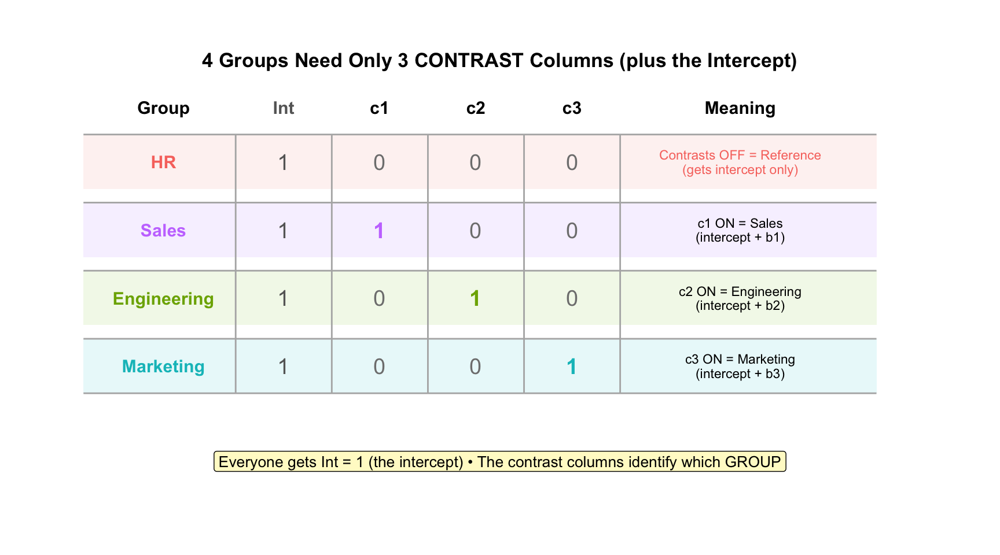
You can see HR is the reference group meaning we used: department = fct_relevel(department, “HR”)
Department Data
| name | employee_id | department | turnover |
|---|---|---|---|
| Alice | 1 | HR | 2.1 |
| Bob | 2 | HR | 1.8 |
| Amy | 3 | HR | 2.2 |
| Ben | 4 | HR | 1.9 |
| Carol | 5 | Sales | 3.5 |
| Dan | 6 | Sales | 3.2 |
| Cindy | 7 | Sales | 3.4 |
| Doug | 8 | Sales | 3.1 |
| Eve | 9 | Engineering | 2.9 |
| Frank | 10 | Engineering | 3.1 |
| Ella | 11 | Engineering | 2.8 |
| Floyd | 12 | Engineering | 3.2 |
| Grace | 13 | Marketing | 4.2 |
| Henry | 14 | Marketing | 3.8 |
| Gail | 15 | Marketing | 4.1 |
| Hector | 16 | Marketing | 3.9 |
People in Each Group
We can calculate the number of people in each group with the code below:
| department | n |
|---|---|
| Engineering | 4 |
| HR | 4 |
| Marketing | 4 |
| Sales | 4 |
You can see there are 4 people per group.
Department Data Factors
We need to convert the department column to be a factor. And we need to set the reference group to “HR”.
[1] "HR" "Sales" "Engineering" "Marketing" You can see from this output that Department has 4 levels, with HR as the reference group.
You know HR is the reference group because it’s listed first.
The Contrast Matrix
Sales Engineering Marketing
HR 0 0 0
Sales 1 0 0
Engineering 0 1 0
Marketing 0 0 1Remember we also use an intercept column to the left of these columns in the design matrix.
Each column in the above output asks: “Are you in this specific department?”
- c1: Are you in Sales? (0/1)
- c2: Are you in Engineering? (0/1)
- c3: Are you in Marketing? (0/1)
HR people get all zeros—they’re identified by NOT being in any other department.
Compare the contrast matrix above to the design matrix on the next slide. You can see that in the design matrix every person in a group receives a row from this contrast matrix.
Design Matrix: y = Xb (4 Groups)
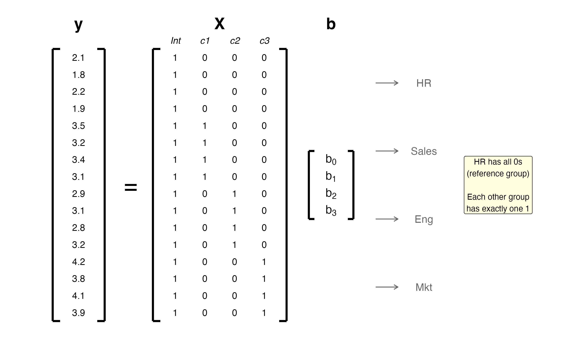
You can see in this Design Matrix that HR people do get 1 in intercept column - that a weight will be applied to. So it is the intercept weight that matters for HR people.
The contrast columns and the intercept column work together in the calculations.
Running the Model
| term | estimate | std.error | statistic | p.value |
|---|---|---|---|---|
| (Intercept) | 2.0 | 0.0912871 | 21.908902 | 0.0000000 |
| departmentSales | 1.3 | 0.1290994 | 10.069757 | 0.0000003 |
| departmentEngineering | 1.0 | 0.1290994 | 7.745967 | 0.0000052 |
| departmentMarketing | 2.0 | 0.1290994 | 15.491933 | 0.0000000 |
Can you look at this output and determine the mean for each department?
Which departments have means that are significantly different from the HR mean?
Augment the Data
Make predicted scores for each person/group
| name | employee_id | department | turnover | .fitted | .resid | .hat | .sigma | .cooksd | .std.resid |
|---|---|---|---|---|---|---|---|---|---|
| Alice | 1 | HR | 2.1 | 2.0 | 0.1 | 0.25 | 0.1874874 | 0.0333333 | 0.6324555 |
| Bob | 2 | HR | 1.8 | 2.0 | -0.2 | 0.25 | 0.1775251 | 0.1333333 | -1.2649111 |
| Amy | 3 | HR | 2.2 | 2.0 | 0.2 | 0.25 | 0.1775251 | 0.1333333 | 1.2649111 |
| Ben | 4 | HR | 1.9 | 2.0 | -0.1 | 0.25 | 0.1874874 | 0.0333333 | -0.6324555 |
| Carol | 5 | Sales | 3.5 | 3.3 | 0.2 | 0.25 | 0.1775251 | 0.1333333 | 1.2649111 |
| Dan | 6 | Sales | 3.2 | 3.3 | -0.1 | 0.25 | 0.1874874 | 0.0333333 | -0.6324555 |
| Cindy | 7 | Sales | 3.4 | 3.3 | 0.1 | 0.25 | 0.1874874 | 0.0333333 | 0.6324555 |
| Doug | 8 | Sales | 3.1 | 3.3 | -0.2 | 0.25 | 0.1775251 | 0.1333333 | -1.2649111 |
| Eve | 9 | Engineering | 2.9 | 3.0 | -0.1 | 0.25 | 0.1874874 | 0.0333333 | -0.6324555 |
| Frank | 10 | Engineering | 3.1 | 3.0 | 0.1 | 0.25 | 0.1874874 | 0.0333333 | 0.6324555 |
| Ella | 11 | Engineering | 2.8 | 3.0 | -0.2 | 0.25 | 0.1775251 | 0.1333333 | -1.2649111 |
| Floyd | 12 | Engineering | 3.2 | 3.0 | 0.2 | 0.25 | 0.1775251 | 0.1333333 | 1.2649111 |
| Grace | 13 | Marketing | 4.2 | 4.0 | 0.2 | 0.25 | 0.1775251 | 0.1333333 | 1.2649111 |
| Henry | 14 | Marketing | 3.8 | 4.0 | -0.2 | 0.25 | 0.1775251 | 0.1333333 | -1.2649111 |
| Gail | 15 | Marketing | 4.1 | 4.0 | 0.1 | 0.25 | 0.1874874 | 0.0333333 | 0.6324555 |
| Hector | 16 | Marketing | 3.9 | 4.0 | -0.1 | 0.25 | 0.1874874 | 0.0333333 | -0.6324555 |
Visualizing the Model: Code
# Plot data points and predicted values
ggplot(dept_augmented, aes(x = department,
y = turnover,
group = department)) +
geom_jitter(width = 0.1, size = 3, alpha = 0.7) +
geom_errorbar(aes(ymin = .fitted, ymax = .fitted),
color = "red", linewidth = 2, width = 0.2) +
labs(x = "Department", y = "Turnover") +
theme_minimal(base_size = 18)Plot: Department Model
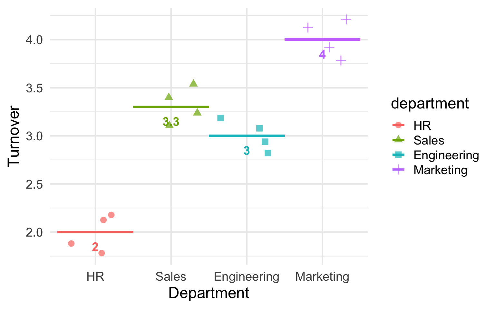
The lines show ŷ (predicted values) for each group—which equal the group means!
💬 Quick chat: Looking at this plot, which department has the highest turnover? Which has the lowest? (Just type the department names)
Interpreting the Output
| Term | Estimate | Interpretation |
|---|---|---|
| (Intercept) | 2.0 | Mean turnover for HR (reference) |
| departmentSales | 1.3 | Sales mean is 1.3 higher than HR |
| departmentEngineering | 1.0 | Engineering mean is 1.0 higher than HR |
| departmentMarketing | 2.0 | Marketing mean is 2.0 higher than HR |
Every coefficient is a comparison to the reference group (HR).
Verify with Group Means
| Term | Estimate | Interpretation |
|---|---|---|
| (Intercept) | 2.0 | Mean turnover for HR (reference) |
| departmentSales | 1.3 | Sales mean is 1.3 higher than HR |
| departmentEngineering | 1.0 | Engineering mean is 1.0 higher than HR |
| departmentMarketing | 2.0 | Marketing mean is 2.0 higher than HR |
| department | mean_turnover |
|---|---|
| HR | 2.0 |
| Sales | 3.3 |
| Engineering | 3.0 |
| Marketing | 4.0 |
Calculation Example: Alice (HR)
Sales Engineering Marketing
HR 0 0 0
Sales 1 0 0
Engineering 0 1 0
Marketing 0 0 1Alice’s row: Int = 1, c1 = 0, c2 = 0, c3 = 0
ŷ = 2.0(1) + 1.3(0) + 1.0(0) + 2.0(0)
ŷ = 2.0 + 0 + 0 + 0 = 2.0
All contrast switches are “off”—Alice only gets the intercept.
Calculation Example: Carol (Sales)
Sales Engineering Marketing
HR 0 0 0
Sales 1 0 0
Engineering 0 1 0
Marketing 0 0 1Carol’s row: Int = 1, c1 = 1, c2 = 0, c3 = 0
ŷ = 2.0(1) + 1.3(1) + 1.0(0) + 2.0(0)
ŷ = 2.0 + 1.3 + 0 + 0 = 3.3
The “Light Switch” Logic: * Carol is in Sales \(\rightarrow\) Sales switch is ON (1) * Carol is NOT in Eng/Mkt \(\rightarrow\) Those switches are OFF (0)
Your Turn: Calculate ŷ for Maria (Marketing)
Maria works in Marketing. Using the same model:
- b₀ = 2.0 (intercept)
- b₁ = 1.3 (Sales)
- b₂ = 1.0 (Engineering)
- b₃ = 2.0 (Marketing)
Step 1: What are Maria’s row values? (Int = ?, c1 = ?, c2 = ?, c3 = ?)
Step 2: Write the equation and plug in values
Step 3: Calculate ŷ
Take 60 seconds. Put your answer in the chat when ready!
Your Turn: Answer
Maria is in Marketing.
| Step | What we do | Result |
|---|---|---|
| 1 | Find Maria’s row values | Int = 1, c1 = 0, c2 = 0, c3 = 1 |
| 2 | Write equation with values | ŷ = 2.0(1) + 1.3(0) + 1.0(0) + 2.0(1) |
| 3 | Calculate | 2.0 + 0 + 0 + 2.0 = 4.0 |
The “Light Switch” Logic:
- Maria is in Marketing → Marketing switch is ON (1)
- Maria is NOT in Sales/Eng → Those switches are OFF (0)
Polling Question 3
Quick check—this should be fast if you understood the a-1 rule.
A categorical predictor has 6 levels. How many contrast columns will R create?
- 4
- 5
- 6
- 7
Polling Question 3: Answer
Correct answer: B) 5
The a − 1 rule: With a groups, you need a − 1 contrast columns.
- 6 groups → 6 − 1 = 5 contrast columns
- The reference group is identified by having 0s on ALL contrast columns
- You don’t need a column for the reference group because it’s captured by the intercept
Additional Statistics: Department Model
R² from glance():
| r.squared | adj.r.squared | sigma | statistic | p.value | df | logLik | AIC | BIC | deviance | df.residual | nobs |
|---|---|---|---|---|---|---|---|---|---|---|---|
| 0.9538639 | 0.9423299 | 0.1825742 | 82.7 | 0 | 3 | 6.808019 | -3.616038 | 0.2469054 | 0.4 | 12 | 16 |
Additional Statistics: Department Model
Descriptive Statistics by Department:
| department | mean_turnover | sd_turnover | n |
|---|---|---|---|
| HR | 2.0 | 0.1825742 | 4 |
| Sales | 3.3 | 0.1825742 | 4 |
| Engineering | 3.0 | 0.1825742 | 4 |
| Marketing | 4.0 | 0.1825742 | 4 |
| term | estimate | conf.low | conf.high | statistic | p.value |
|---|---|---|---|---|---|
| departmentSales | 1.3 | 1.02 | 1.58 | 10.07 | 0 |
| departmentEngineering | 1.0 | 0.72 | 1.28 | 7.75 | 0 |
| departmentMarketing | 2.0 | 1.72 | 2.28 | 15.49 | 0 |
Results Paragraph: Department Turnover
We examined whether department membership was associated with employee turnover (N = 16). We used linear regression with treatment coding, where HR served as the reference group.
Descriptive statistics. HR employees (n = 4) had a mean turnover of 2.00 (SD = 0.18). Sales employees (n = 4) had M = 3.30 (SD = 0.18). Engineering employees (n = 4) had M = 3.00 (SD = 0.18). Marketing employees (n = 4) had M = 4.00 (SD = 0.18).
Results. Each regression coefficient (b) represents the difference in turnover between a department and the reference group (HR). Sales employees had turnover 1.30 points higher than HR, b = 1.30, 95% CI [1.02, 1.58], t(12) = 10.07, p < .001, d = 7.12, 95% CI [2.43, 11.81]. Engineering employees had turnover 1.00 points higher than HR, b = 1.00, 95% CI [0.72, 1.28], t(12) = 7.75, p < .001, d = 5.48, 95% CI [1.71, 9.25]. Marketing employees had turnover 2.00 points higher than HR, b = 2.00, 95% CI [1.72, 2.28], t(12) = 15.49, p < .001, d = 10.95, 95% CI [4.03, 17.88]. The overall model was significant, F(3, 12) = 82.70, p < .001, explaining 95.4% of the variance in turnover, R² = .95, 95% CI [.84, .97].
Where Do the p-Values Come From?
| term | estimate | std.error | statistic | p.value |
|---|---|---|---|---|
| (Intercept) | 2.0 | 0.0912871 | 21.908902 | 0.0000000 |
| departmentSales | 1.3 | 0.1290994 | 10.069757 | 0.0000003 |
| departmentEngineering | 1.0 | 0.1290994 | 7.745967 | 0.0000052 |
| departmentMarketing | 2.0 | 0.1290994 | 15.491933 | 0.0000000 |
The statistic column is a t-value from a t-test
Each row tests whether that coefficient is significantly different from zero:
\[t = \frac{\text{estimate}}{\text{std.error}}\]
For example, the Sales coefficient: \(t = \frac{1.30}{0.13} = 10.07\)
The p.value is simply the p-value from that t-test, testing the null hypothesis that the true coefficient equals zero. Using t = 10.07 from tidy() and df = 12 from glance():
[1] 0.0000003322015This matches the p.value in the table (we multiply by 2 for a two-tailed test).
Remember df from 6060? When cell sizes are equal \(df = a(n-1) = 4(4-1)=4(3)=12\).
Understanding Standard Errors in Treatment Coding
| term | estimate | std.error | statistic | p.value |
|---|---|---|---|---|
| (Intercept) | 2.0 | 0.0912871 | 21.908902 | 0.0000000 |
| departmentSales | 1.3 | 0.1290994 | 10.069757 | 0.0000003 |
| departmentEngineering | 1.0 | 0.1290994 | 7.745967 | 0.0000052 |
| departmentMarketing | 2.0 | 0.1290994 | 15.491933 | 0.0000000 |
Why do the standard errors differ?
- Intercept SE: This is the standard error of the reference group’s mean alone
\[SE_{\text{intercept}} = \sqrt{\frac{MSE}{n_{\text{reference}}}} = \sqrt{\frac{MSE}{4}}\]
- Coefficient SEs: Each coefficient is a difference between two means, so uncertainty from both groups combines
\[SE_{\text{coefficient}} = \sqrt{MSE \times \left(\frac{1}{n_{\text{reference}}} + \frac{1}{n_{\text{group}}}\right)} = \sqrt{MSE \times \left(\frac{1}{4} + \frac{1}{4}\right)}\]
The coefficient SEs are larger because estimating a difference involves uncertainty from two groups. If you want to check these numbers you can calculate them. Note you need sigma from the glance() output. Simply square it so \(MSE = sigma^2\)
Why Are the Three Coefficient SEs Identical?
| term | estimate | std.error | statistic | p.value |
|---|---|---|---|---|
| (Intercept) | 2.0 | 0.0912871 | 21.908902 | 0.0000000 |
| departmentSales | 1.3 | 0.1290994 | 10.069757 | 0.0000003 |
| departmentEngineering | 1.0 | 0.1290994 | 7.745967 | 0.0000052 |
| departmentMarketing | 2.0 | 0.1290994 | 15.491933 | 0.0000000 |
In this balanced design (n = 4 per group), each coefficient compares a group of 4 to the reference group of 4. The formula is identical for all three:
\[\sqrt{MSE \times \left(\frac{1}{4} + \frac{1}{4}\right)} = \sqrt{MSE \times 0.5}\]
How does reference group choice affect SEs?
- Balanced design (equal n): Changing the reference group doesn’t change the SEs
- Unbalanced design: Choosing a larger reference group decreases all SEs (both intercept and coefficients), maximizing precision for all comparisons
The Big Picture: What We’ve Learned
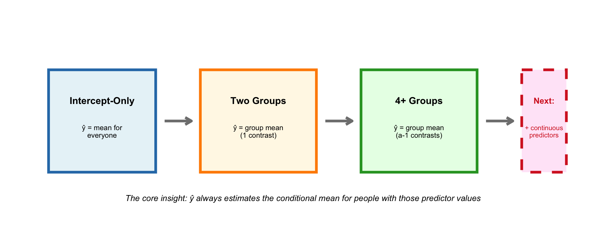
Key takeaways before the break:
- ŷ = estimated mean for people with those predictor values
- Treatment coding uses 0/1 “switches” to turn coefficients on/off
- Intercept = reference group mean; coefficients = differences from reference
References
American Psychological Association. (2020). Publication manual of the American Psychological Association (7th ed.). https://doi.org/10.1037/0000165-000
Butler, A. C., Chapman, J. E., Forman, E. M., & Beck, A. T. (2006). The empirical status of cognitive-behavioral therapy: A review of meta-analyses. Clinical Psychology Review, 26(1), 17–31. https://doi.org/10.1016/j.cpr.2005.07.003
Cohen, J. (1988). Statistical power analysis for the behavioral sciences (2nd ed.). Lawrence Erlbaum Associates.